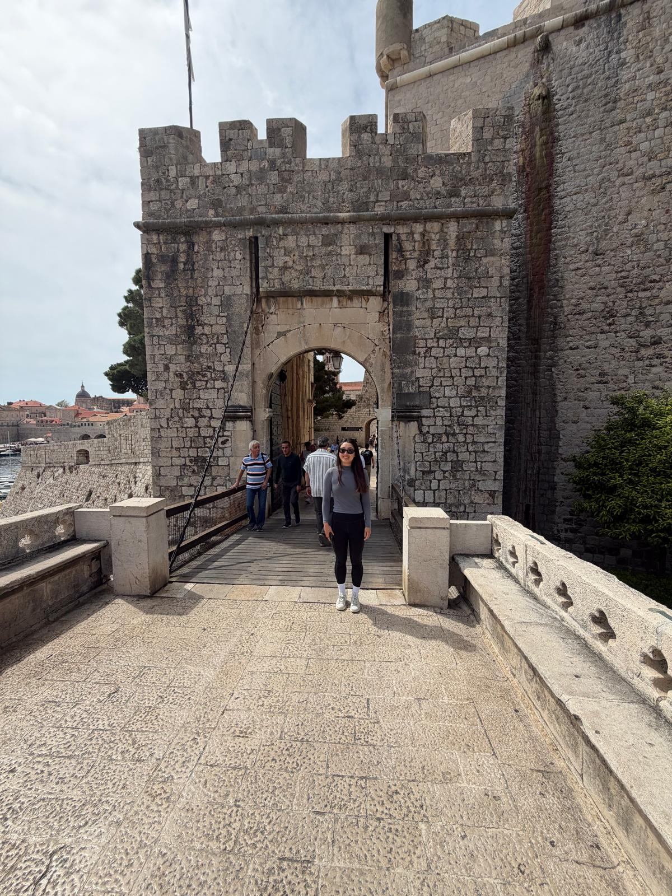

← Travel
Dubrovnik 2026
Last stop with James and Pat, Dubrovnik! We saw a few more Game of Thrones filming locations and soaked up our last rays of sun before heading back to the UK.

12th April 2026
We caught the morning ferry from Split to Dubrovnik and immediately when to take in the old town of Dubrovnik. It really is a place defined still by the old walls. You do get the sense that you are walking back through time if not for the new shops and restaurants. We also visited the nearby beach, although as with most European beaches, you contend with the small rocks that try to destroy your feet! We ended up taking a walking tour through the city and through the famous street from GoT ("Shame!"). Apparently Australians are notorious for being raucous on this street and reenacting the scene. We rubbed a statues big shiny nose before attempting an acrobatic move to stand on this small ledge which would apparently grant you many years of good luck.
We went into some of the more historical buildings including a very old pharmacy with a beautiful courtyard. We took a walk around the city walls which were surprisingly long. The orange rooves of Dubrovnik really set out a beautiful contrast against the white of the buildings and the blue sea. We ended at a small castle just outside the city walls where, surprise surprise, another large portion of GoT was filmed. We were done for the day and for the trip for the most part. We said our goodbyes to James and Pat and took one more stop at the museum where we saw some the shipping history of Dubrovnik and then headed back off to London!